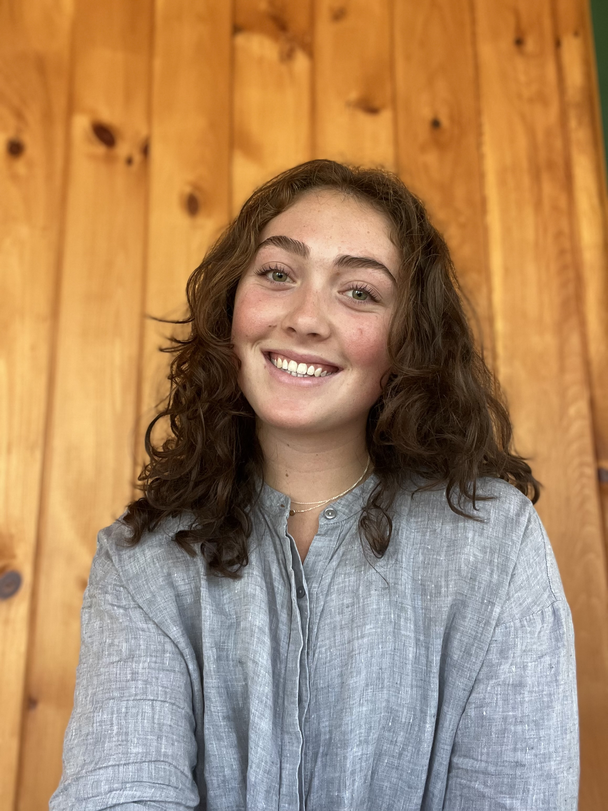
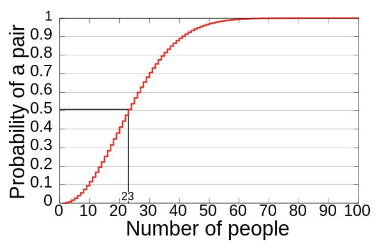
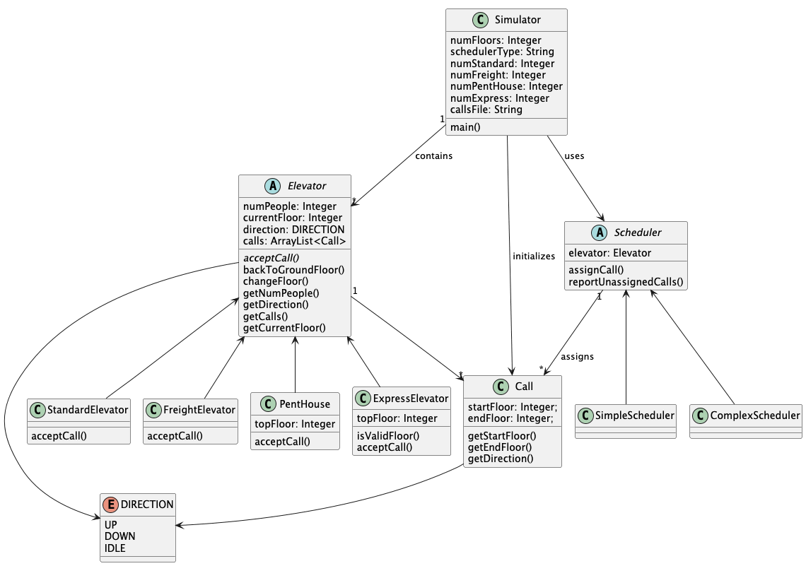

Computer Science student interested in product management
I grew up in Cambridge, Massachusetts and study Computer Science at the University of San Diego, with minors in Mathematics and Film Studies. I'm interested in product management because I like working where technical decisions meet the people who use what gets built.
My coursework and team projects have taught me to write clean, tested code and to work with teammates through branches, pull requests, and code reviews. That background helps me understand what is feasible and talk clearly with engineers.
I'm a Division I athlete on the USD Women's Rowing team, which has taught me a lot about showing up consistently and working as part of a crew. Outside of rowing, I like hiking, swimming, camping, and baking for family and friends.
Skills
Programming
Engineering practices
Tools
Projects

Birthday Paradox
A simulation of the birthday paradox, which says that once a room holds more than 23 people, the chance that two share a birthday is better than 50%. The program tests groups of 5 to 100 people, running 20 trials per group size with randomly generated birthdays and tracking how often duplicates appear.
I wrote the Trial and Experiment classes. We focused on clean code and clear commit messages.
View on GitHub
Elevator Simulator
A simulation of how different elevators respond to service requests in a building. Standard, Freight, Penthouse, and Express elevators each follow their own rules about which floors they can reach and when they can change direction. A scheduler assigns calls using either a simple or an optimized strategy, and the program prints every elevator's state each round so you can follow its decisions.
I wrote the Elevator class, each elevator type, the Call class, and the DIRECTION enum, and I helped design how elevators and the scheduler interact. I wrote unit tests before the code for each feature, and our team used branches, pull requests, and code reviews.
Writing tests first made me define the expected behavior and edge cases before building anything, a habit I'd want on any product team.
View on GitHub
Game of Life
An interactive life simulator where players create a character and move year by year through school, careers, marriage, children, and buying cars and homes. Random events and player choices affect the character's finances and opportunities, so every playthrough is different. We chose it because we wanted something fun and relatable for a general audience.
I built the life simulation and financial systems: character progression, career selection, insurance calculations, and major life events. I also wrote unit tests (for example, for insurance premiums) and spent a lot of time debugging how objects interact.
We split the game into small classes with single responsibilities, which made it easy to add new events later. It showed me how design choices made early affect how easily a product can grow.
View on GitHub